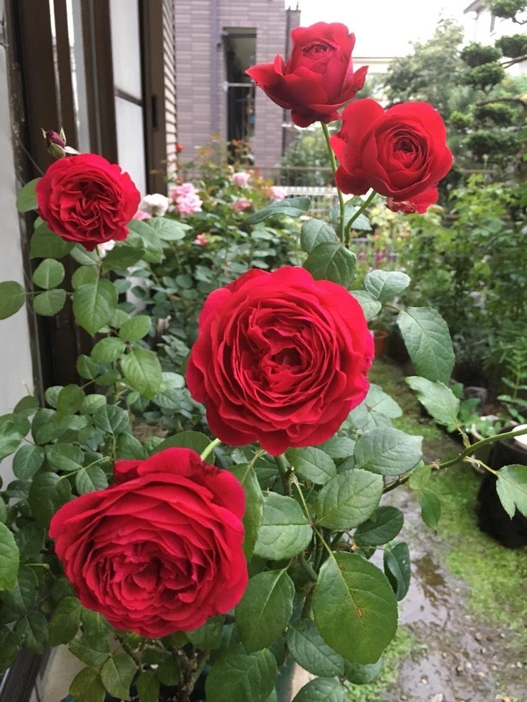
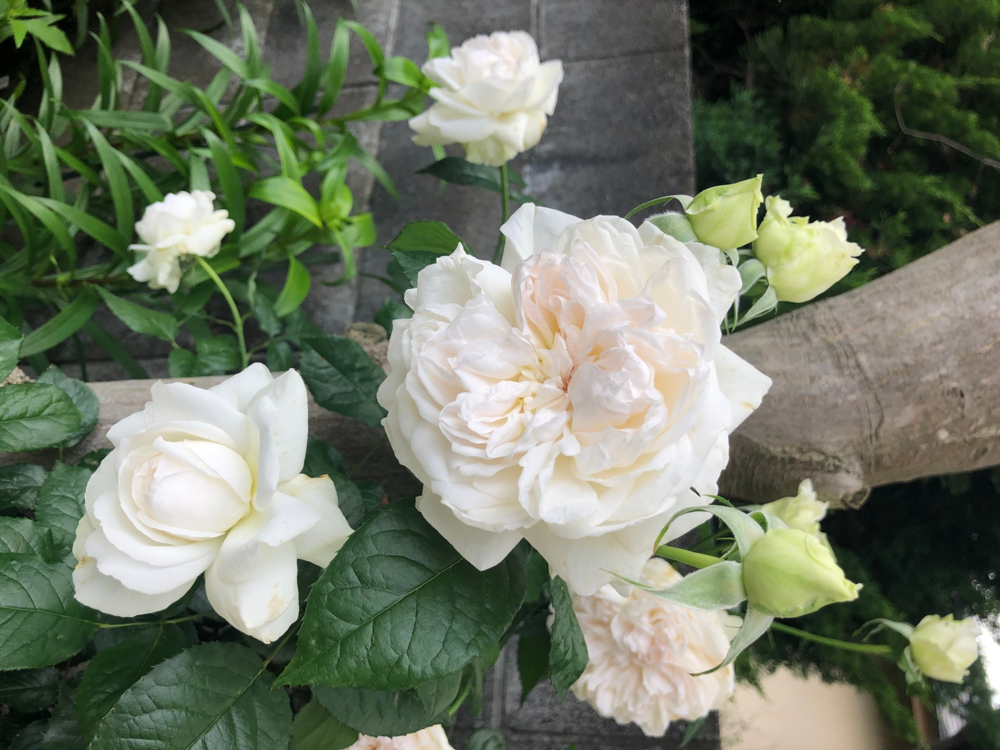

育て方
| / | マイローズ | ギーサヴォア | ボレロ | アイスバーグ | ポールセザンヌ | リベルラ |
|---|---|---|---|---|---|---|
| 色 | 赤 | 濃いピンク | 白 | 白 | 黄色 絞り | 紫 |
| 香り | 微香 | 強香 | 強香 | 微香 | 強香 | 強香 |
| 耐病性 | とてもあり | とてもあり | あり | あり | 注意が必要 | 注意が必要 |
| 四季咲性 | ◎ | 〇 | ◎ | ◎ | 〇 | 〇 |
| 国 | 日本 | フランス | フランス | ドイツ | フランス | 日本 |
家で育てているバラの中から6種類を選び、色や香り、耐病性の観点から比較したものを上記に表としてまとめました。
バラ６種類のひと言コメント・写真
マイローズ：無農薬可能。繰り返し咲く次世代のバラ。
ギーサヴォア：耐病性が強く、強健。鮮やかで香りもよいバラ。
ボレロ：香りが素晴らしく、美しい。人気品種のバラ。
アイスバーグ：とにかくよく咲き、たくさんの花をつけるため、バラ園には必ず植えられているバラ。
ポールセザンヌ：華やかで美しく、香りもよい。しかし黒星病には注意しなければいけないバラ。
リベルラ：やさしく波状の花びらが美しいが、手をかけないとうまく育たないバラ。
狭い庭でバラを育てる方法
既存のものを最大限利用することが大事です！
- ★庭の木に誘引する★
- ★道と道の間にあるフェンスに誘引する★
日陰でバラを育てる方法
- ★植えたバラの近くに真っ白な砂利を敷く
- ★なるべく高い位置で咲かせる
- ★鉢で育てているものは、棚を作り、その上に置く